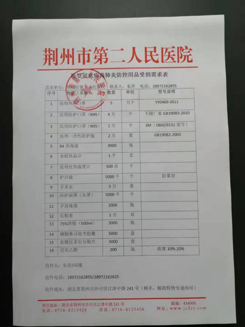

现场 | 湖北与武汉红会，物资捐赠卡在了这里？
原文链接 备份链接 海内外源源不断捐赠武汉，各大医院仍全面告急。被指定接收捐赠物资的主要机构湖北省与武汉市红十字会系统成为众矢之的，他们原本应该为重大突发事件做好准备，却一开始就因专业能力不足遭遇了信任危机。 本刊记者探访了武汉红十字会位 …
封城后的湖北荆州：医用级防护物资存量告急
2020-02-03 19:36 作者：邹黄晶 张玉 来源：中国经营网
特约撰稿 邹黄晶 本报记者 张玉 荆州、上海报道
“我们已经想尽了一切办法，目前最缺的还是医用级口罩、防护服、护目镜等，只能尽量保证隔离病房和发热门诊。”2月3日，荆州市第二人民医院工会的翁主任向《中国经营报》记者表示。
最新数据显示，2020年2月2日0时～24时，湖北省新增新型冠状病毒感染的肺炎病例2103例，其中荆州市166例，在全省15个市中位列第4位。截至2020年2月2日24时，湖北省累计报告新型冠状病毒感染的肺炎病例11177例，其中荆州市499例，在全省位列第5位。
随着疫情的不断蔓延，做好医疗防护物资的收治和调配，保证医疗防护物资供应的攻坚战正在打响。
有绿色通道 缺少合格的医用物资
本报记者获取的一份荆州市第二人民医院新型冠状病毒肺炎防控用品受捐需求表显示，该院医用外科口罩、医用防护口罩、医用一次性防护服、84消毒液、水银体温计、医用红外温度计、护目镜、手术衣、防护面罩(头罩)、手消毒液、长鞋套、75%酒精(500mL)、磷酸奥司他韦胶囊及盐酸比多尔分散片等多种防护物资及药品均呈现物资紧张的状况。其中，仅各种类型的医用口罩需求量就达到11万个。

图片由受访者提供
2月3日中午11﹕30，荆州市第二人民医院一位专门负责捐赠事宜的工作人员向记者表示：“这张表上的部分物资通过各种渠道已经到位，但目前最大的问题还是医用级防护口罩、医用级防护服、医用眼罩以及医用面罩，这几种防护用品目前我们存量非常少。”
这位工作人员向记者介绍：“N95级别有很多种不同的应用场景，比如防花粉的、防雾霾的，这也是我们强调要医用级N95口罩的原因之一。另外，不管是国标还是其他国家标准，只要是给一线用的，都必须是医用场景的。”上述工作人员坦言，其实收到了一些其他的N95口罩，但只能给二线、三线的医护人员使用，医用级别的非常紧缺。
除了荆州市第二人民医院，荆州市另一家新冠肺炎定点医院——荆州市第一人民医院负责物资捐赠的一位负责人向记者直言：“目前医院最缺的是国标19083的医用级N95口罩和19082标准的防护服。”
而在荆州市下辖的监利县，这个全市距离此次疫情暴发中心的武汉市最近的县，防护物资存量同样不容乐观。
监利县中医医院一位内部人士向记者透露，很多物资都是由一些民间组织机构、个人直接捐到中医院，当然红十字会也会下拨物资。他表示：“医用防护服、护目镜，我们都是供给一线，现有的物资收一批用一批，有的还能用几天，有的已经没有了，像能上一线的医用防护口罩以及防护服。”
此外，荆州市几家医院的工作人员都表示，目前有绿色通道，只是缺少合格的医用物资。
记者就志愿者防护物资进城问题致电荆州市新冠(新型)肺炎防控指挥部，对方表示：“指挥部这边目前只负责文件上传下达，物资捐赠、开具通行证明需由当地交通运输局，也就是指挥部交通组所在地负责。”
荆州市红十字会对社会捐赠每日公示
“疫情刚开始的一段时间，全国各地都有人找我要求购买医用N95口罩，甚至还有孕妇找我购买医用防护服。”江西南昌一位口罩代理商向记者表示，由于春节假期这一季节性因素，不少口罩工厂恢复生产还需要时间。“大约初九初十能基本恢复生产。生产恢复较慢除了用工难，还有原材料短缺等因素。”
不过，她向记者表示：“从上级经销商处了解到，防护用品和消毒用品已经列为政府管控物资(军需物资)，主要供给一线。”

图片由受访者提供，南昌当地一家较大的防控用品生产基地需向当地政府报备生产情况
2月1日，荆州市新型冠状病毒感染的肺炎防控指挥部召开会议，安排部署下阶段全市疫情防控工作。市长崔永辉在发言中强调，各地各部门要把社会捐赠款物管好用好，准确掌握数据、分配去向等信息。要高度关注重点区域，对于离武汉近、人口众多、医疗资源相对薄弱的县市区，在力量分配和物资调配上要给予倾斜。要坚决克服麻痹思想和侥幸心理，从严从实做好隐患排查，对暴露出来的问题要及时整改，确保防控工作主动及时、措施到位、处置有效。
2月3日，记者从荆州市中心医院一位工作人员处了解到，医疗防护物资一直在接收，具体数字还在统计之中。她还向记者表示：“目前我们筹资防护物资主要还是依靠自筹、企业与个人的社会捐赠、红十字会调拨三种渠道。”
她向记者坦言：“最近的物资捐赠接收要合理很多，可以直接寄到医院，也可以通过红十字会指定某家医院。”

图片来自荆州市红十字会微信公众号截图，昨晚9点除了发布本级红十字会部分资金去向外，还对接收的物资、资金进行了公示
另据了解，目前荆州市红十字会仍是本市最大物资中转站。荆州市红十字会相关人士向记者表示：“目前防护物资进城是有绿色通道的，拉这些医疗物资的货车经过检查后一般是不拦的，如果货车出城遇到问题，我们一般就开个通行证。”
不过，这位红十字会工作人员向记者表示：“如果企业或者个人准备了某一批物资或者资金指定捐赠给荆州市某家医院，我们会先做一个入库登记，然后通知(捐赠人指定)医院领取。”记者发现，荆州市红十字会对于社会捐赠情况、上级调拨情况在官方微信公众号上进行了每日公示。
(编辑：石英婧 校对：颜京宁)
* 除《中国经营报》署名文章外，其他文章为作者独立观点，不代表中国经营网立场。
* 未经本网授权，任何单位及个人不得转载、摘编或以其它方式使用上述作品，违者将被追究法律责任。
* 凡本网注明“来源：中国经营网” 或“来源：中国经营报-中国经营网”的所有作品，版权均属于中国经营网（本网另有声明的除外）。
* 如因作品内容、版权和其它问题需要同本网联系的，请在30日内进行。
* 有关作品版权事宜请联系：010-88890046 邮箱：banquan@cbnet.com.cn
原文链接 备份链接 海内外源源不断捐赠武汉，各大医院仍全面告急。被指定接收捐赠物资的主要机构湖北省与武汉市红十字会系统成为众矢之的，他们原本应该为重大突发事件做好准备，却一开始就因专业能力不足遭遇了信任危机。 本刊记者探访了武汉红十字会位 …
原文链接 备份链接 武汉市已将所有捐赠物资集中统一调配，这有助于物尽其用，但配送效率亟须提升。这几日陆续有社会捐赠物资送到武汉协和医院，但仅有一线医护人员能穿上防护服，很多医用物资仍然紧缺 文 |《财经》 …
原文链接 备份链接 31.01.2020本文字数：1420，阅读时长大约2分钟 导读：医院现在依然是防护物资紧缺，特别是一些普通科（病）室。 作者 | 第一财经 吴绵强 “最近科室有确诊（新型冠状病毒感染的肺炎）的病例了，我们才开始穿防 …
原文链接 备份链接 今天，湖北省武汉市红十字会向武汉市中心医院提供了医用外科口罩4000个、医用防护服600套；向武汉市洪山区中医医院提供了医用防护服400套，84消毒液10箱，医用口罩5箱。武汉红十字会表示，接收的所有物资都将被送往一线 …
原文链接 备份链接 什么拉长了社会捐赠物资从红十字会的仓库到疫情一线医务人员手中的最后短暂的路程？又是谁夺走了医生上战场的武器？ 记者 | 郭苏妍 叶雨晨 邓舒夏 王一越 编辑 | 张云亭 制图 | 程 星 2月1日，中国红十字总会工作 …